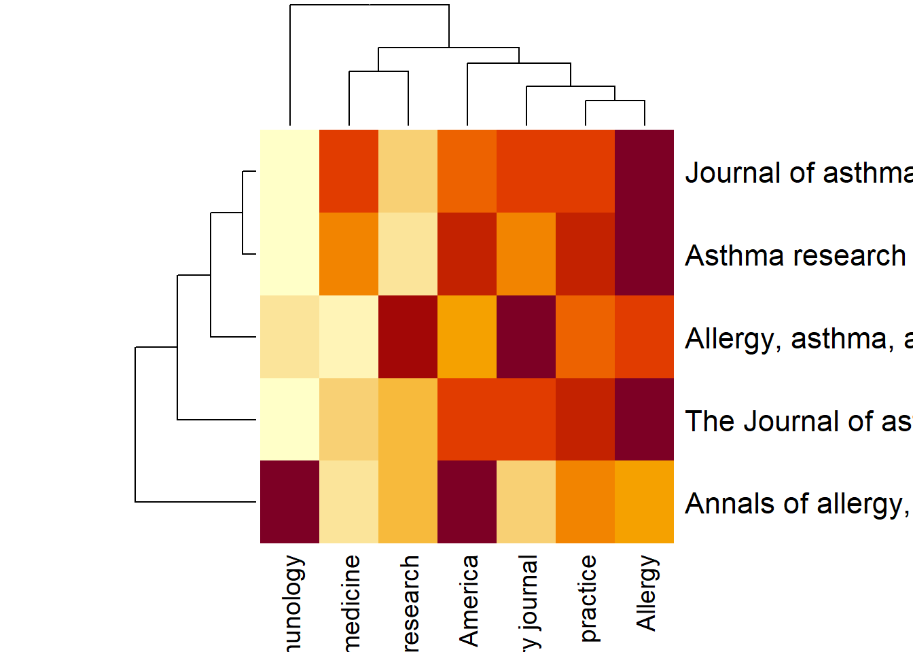
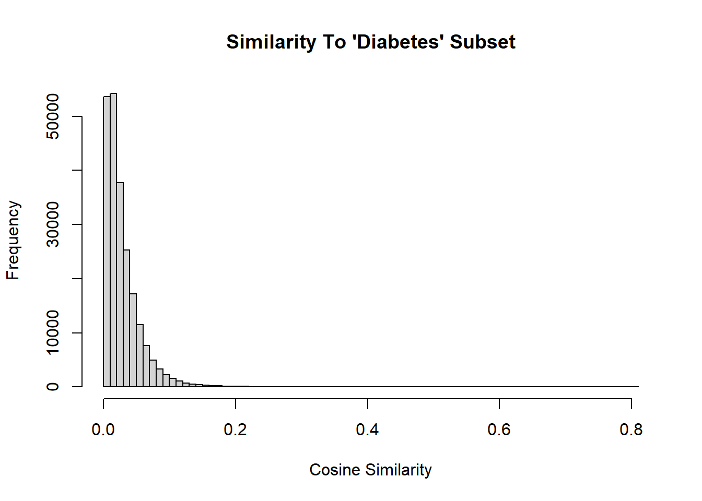
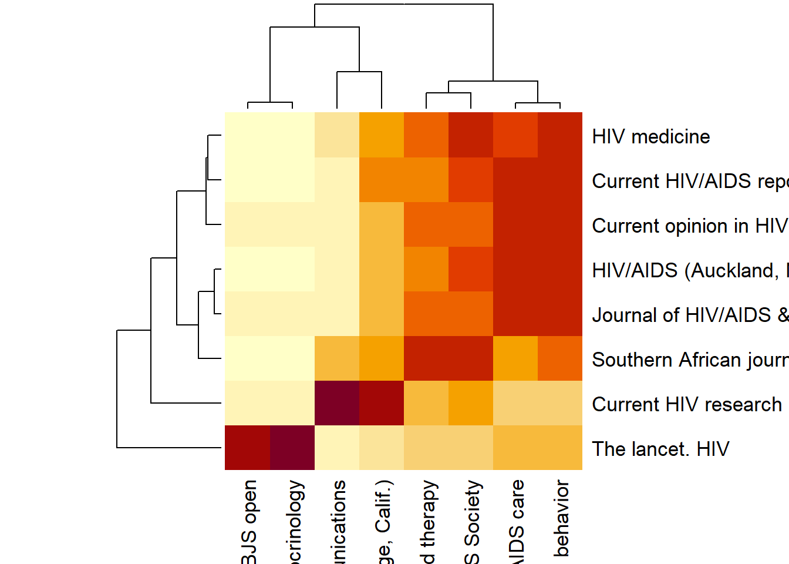

UNDER DEVELOPMENT
Motivation:
Biomedical research is performed at a remarkable pace. Many stakeholders benefit from the advance of this research, however the volume of literature in various Biomedical subjects is increasingly becoming a hurdle for researchers and practitioners. Valuable time is spent in literature review, searching for relevant literature and extracting useful information from it. There are many tools for semi automated literature search and review, including information extraction.
The number of academic journals is also potenially overwhelming. Some journals have massively broad subjects and wide circulation, while others may be niche journals with smaller readerships. Subject matter is difficult to determine based on a cursory glance at the title and a few published articles. Therefore it could be useful to classify journals based on the literature that they publish.
The PubMed database of article metadata is an XML structured mass of information containing the titles, authors, abstracts, affiliations and many other potentially useful fields.
I used TF-IDF feature vectors to examine academic journals using abstracts on PubMed. The distributed computing environment, Spark, is used to filter and transform text into TF-IDF vectors.
Datasets
This analysis uses PubMed metadata to compare subgroups of journals. The data was
downloaded from the PubMed Baseline at ftp://ftp.ncbi.nlm.nih.gov/pubmed/baseline.
This data contains many fields for each article hosted on PubMed. The fields used
in the analysis below were ‘PMID’, ‘AbstractText’, and ‘JournalTitle’.
The downloaded metadata was loaded as XML into the NYU HPC distributed file
system (HDFS). The spark-xml package from Databricks was used to parse the XML
files into a Spark DataFrame. As a DataFrame the metadata was filtered and
transformed into word feature vectors for every journal listed.
Three hand selected subgroups of journals were compared to the whole corpus: Diabetes, Asthma, and HIV. Journals were selected for each group if their title contained the disease term. I was curious to find out what journals had similar TF-IDF feature vectors to these highly specific groups of journals.
asthma$journal_asthma %>% unique() %>% head(3)## [1] "Journal of asthma and allergy"
## [2] "The Journal of asthma : official journal of the Association for the Care of Asthma"
## [3] "Annals of allergy, asthma & immunology : official publication of the American College of Allergy, Asthma, & Immunology"diabetes$journal_diabetes %>% unique() %>% head(3)## [1] "Diabetology & metabolic syndrome" "Journal of diabetes research"
## [3] "JMIR diabetes"hiv$journal_hiv %>% unique() %>% head(3)## [1] "Southern African journal of HIV medicine"
## [2] "Current HIV research"
## [3] "Current HIV/AIDS reports"The sizes of the hand-selected groups compared to the whole set of journals:
list(
distinct_all = n_distinct(asthma$journal_x),
distinct_asthma = n_distinct(asthma$journal_asthma),
distinct_diabetes = n_distinct(diabetes$journal_diabetes),
distinct_hiv = n_distinct(hiv$journal_hiv)
) %>% as.data.frame( row.names = "n_journals")## distinct_all distinct_asthma distinct_diabetes distinct_hiv
## n_journals 5591 5 40 8Spark is used to filter and transform the abstracts into feature vectors for each academic journal. These journals are then compared to each other. Three subgroups are filtered from the whole set. Each subgroup reflects a sample of journals in different health subjects: Diabetes, Asthma, and HIV. These three subgroups are then compared to the whole set of feature vectors. The cosine similarity is calculated for all comparisons, and each subgroup’s distribution from 0 (no similarities) to 1 (identical) is assessed.
Design
Lemma Array Generation
Data was cleaned, analyzed, and visualized in Spark and R. After data collection and XML parsing, the Spark DataFrame was selected for “PMID”, “AbstractText”, and “JournalTitle” columns. The Stanford CoreNLP package was used to split sentences in each AbstractText string into word arrays, and convert words into generic lemmas. Part of speech tags were generated for each lemma to filter out uninformative elements, such as coordinating conjunctions and prepositions. Once filtered, the lemmas were aggregated into an array for each JournalTitle. This resulted in all unique JournalTitle having a corresponding array of lemmas from all articles in this PubMed sample. At this stage there were 5591 unique JournalTitles and 112,405 unique lemmas across all JournalTitles.
TF-IDF Features
Lemma arrays were converted to TF-IDF feature vectors in the following way. The Spark ML package was used to hash lemmas. The number of features for the hash function was set above 5591 to \(2^17\) to avoid collisions and to increase calculation speed. Spark ML was also used to calculate IDF for the hashed lemma vectors. IDF values were rescaled to generate TF-IDF values.
Pairwise Cosine Similarity

Subgroups of journal titles were selected based three health terms: Diabetes, HIV, and Asthma. This was done in order to gather three groups for cosine similarity analysis. The subgroups were selected using RegEx pattern matching. Each group was passed to the pairwise cosine similarity user-defined-function to be compared against the whole set. Each cosine similarity DataFrame was written to csv files for further analysis in R.
Quantile Comparisons
The final analysis and visualization steps were completed in R. Each 10th quantile was calculated for each set using stats::quantile(). The distributions of each set is concentrated towards 0 with long tails trailing towards 1. This is due to the fact that the cosine similarity of most JournalTitle feature vectors are not similar. A thin distribution tail contains the relatively few feature vectors that are similar. Quantiles were also calculated for isolated subgroups to determine if the pattern matching technique yielded groups that were internally more similar than the whole corpus. Internally, the groups had less spread than the whole corpus according to quantile calculations.
Within Group Similarity Quantiles
| Subgroup | 10 | 20 | 30 | 40 | 50 | 60 | 70 | 80 | 90 |
|---|---|---|---|---|---|---|---|---|---|
| Diabetes | 0.0115 | 0.0358 | 0.0565 | 0.0838 | 0.1074 | 0.1402 | 0.1715 | 0.2033 | 0.2548 |
| Asthma | 0.0253 | 0.0286 | 0.0373 | 0.0896 | 0.1358 | 0.1669 | 0.2097 | 0.2627 | 0.3244 |
| HIV | 0.0245 | 0.0454 | 0.0814 | 0.0922 | 0.1255 | 0.1597 | 0.1742 | 0.2013 | 0.2405 |
Quantiles of cosine similarity calculations for journals within the three subgroups.
Now, the similarities of the groups Diabetes, HIV, and Asthma versus the whole set can be compared to one another. The tail of each distribution yields information about how much the corpus is similar to a group, while the bulk of the distribution yields information about how much the corpus is not similar to the group.
{kind=link}
{kind=link}
{kind=link}
Estimated difference of quantiles. Calculated with WRS2 in R.
The R package WRS2 was used to calculate quantile differences between each group. The function qcomb() was run on each of the following pairs: diabetes-asthma, diabetes-hiv, asthma-hiv. The output values include estimated difference for each quantile, a standard p-value, and a p.crit value. Asside from the 0 percentile estimate, all standard p-values and p.crit values were below 0.05, while most were below 0.01. All pairwise comparisons show a high degree of similarity in the 40th and 60th percentile range. The most stark difference is in the 80th quantile and above. Diabetes-Asthma and Diabetes-HIV are the most dissimilar in the upper quantiles. This indicates that the group Diabetes is more distinct than the groups HIV and Asthma.
Conclusion
The workflow described in this paper can be customized to group vectors for any of the metadata fields in PubMed. For example, grant agency, author affiliation, year, and MESH terms are all loaded in the beginning of the workflow. They could easily be incorporated into an analysis.
Highly skewed distributions are difficult to characterize because most estimators focus on the maximum area of a distribution. In the case of cosine similarity in a large corpus, the distribution tail will contain the most useful information. This workflow, and other similar workflows, allow researchers to gather information that might not be readily apparent with a standard statistical approach.
thebibliography
\bibitem{b1} Allen, E. A., Erhardt, E. B., Calhoun, V. D. (2012). Data Visualization in the Neurosciences: Overcoming the Curse of Dimensionality. Neuron, 74(4), 603–608. https://doi.org/10.1016/j.neuron.2012.05.001
\bibitem{b2} Altınel, B., Can Ganiz, M., Diri, B. (2015). A corpus-based semantic kernel for text classification by using meaning values of terms. Engineering Applications of Artificial Intelligence, 43, 54–66. https://doi.org/10.1016/j.engappai.2015.03.015
\bibitem{b3} amoeba. (2016, October 4). What’s the formula for the Benjamini-Hochberg adjusted p-value? [Forum Comment]. Cross Validated. https://stats.stackexchange.com/questions/238458/whats-the-formula-for-the-benjamini-hochberg-adjusted-p-value/402217
\bibitem{b4} Anscombe, F. J. (1973). Graphs in Statistical Analysis. The American Statistician, 27(1), 17. https://doi.org/10.2307/2682899
\bibitem{b5} Benjamini, Y., Heller, R., Yekutieli, D. (2009). Selective inference in complex research. Philosophical Transactions of the Royal Society A: Mathematical, Physical and Engineering Sciences, 367(1906), 4255–4271. https://doi.org/10.1098/rsta.2009.0127
\bibitem{b6} Benjamini, Y., Hochberg, Y. (1995). Controlling the False Discovery Rate: A Practical and Powerful Approach to Multiple Testing. Journal of the Royal Statistical Society: Series B (Methodological), 57(1), 289–300. https://doi.org/10.1111/j.2517-6161.1995.tb02031.x
\bibitem{b7} Databricks. (n.d.). Databricks spark-xml. GitHub. https://github.com/databricks/spark-xml
\bibitem{b8} Doan, S., Yang, E. W., Tilak, S. S., Li, P. W., Zisook, D. S., Torii, M. (2019). Extracting health-related causality from twitter messages using natural language processing. BMC Medical Informatics and Decision Making, 19(S3), 19. https://doi.org/10.1186/s12911-019-0785-0
\bibitem{b9} Felizardo, K. R., MacDonell, S. G., Mendes, E., Maldonado, J. C. (2012). A Systematic Mapping on the use of Visual Data Mining to Support the Conduct of Systematic Literature Reviews. Journal of Software, 7(2), 1. https://doi.org/10.4304/jsw.7.2.450-461
\bibitem{b10} HARRELL, F. R. A. N. K. E., DAVIS, C. E. (1982). A new distribution-free quantile estimator. Biometrika, 69(3), 635–640. https://doi.org/10.1093/biomet/69.3.635
\bibitem{b11} Kurland, O., Lee, L. (2009). Clusters, language models, and ad hoc information retrieval. ACM Transactions on Information Systems, 27(3), 1–39. https://doi.org/10.1145/1508850.1508851
\bibitem{b12} Luhn, H. P. (1957). A Statistical Approach to Mechanized Encoding and Searching of Literary Information. IBM Journal of Research and Development, 1(4), 309–317. https://doi.org/10.1147/rd.14.0309
\bibitem{b13} Mair, P., Wilcox, R. (2019). Robust statistical methods in R using the WRS2 package. Behavior Research Methods, 52(2), 464–488. https://doi.org/10.3758/s13428-019-01246-w
\bibitem{b14} Manning, C. D., Raghavan, P., Schütze, H. (2008). Introduction to Information Retrieval [E-book]. Cambridge University Press. https://www-nlp.stanford.edu/IR-book/
\bibitem{b15} Manning, C., Surdeanu, M., Bauer, J., Finkel, J., Bethard, S., McClosky, D. (2014). The Stanford CoreNLP Natural Language Processing Toolkit. Stanford. https://nlp.stanford.edu/pubs/StanfordCoreNlp2014.pdf
\bibitem{b16} Pennington, J., Socher, R., Manning, C. (2014). Glove: Global Vectors for Word Representation. Proceedings of the 2014 Conference on Empirical Methods in Natural Language Processing (EMNLP), 1. https://doi.org/10.3115/v1/d14-1162
\bibitem{b17} Rousselet, G. A., Pernet, C. R., Wilcox, R. R. (2017). Beyond differences in means: robust graphical methods to compare two groups in neuroscience. European Journal of Neuroscience, 46(2), 1738–1748. https://doi.org/10.1111/ejn.13610
\bibitem{b18} Salton, G., Buckley, C. (1988). Term-weighting approaches in automatic text retrieval. Information Processing Management, 24(5), 513–523. https://doi.org/10.1016/0306-4573(88)90021-0
\bibitem{b19} Singhal, A. S. (2001). Modern Information Retrieval: A Brief Overview. IEEE. http://singhal.info/ieee2001.pdf
\bibitem{b20} Smyth, G. S. gordon-smyth. (2012, January 1). Bioconductor Forum. Bioconductor Forum. https://support.bioconductor.org/p/49864/
\bibitem{b21} SPARCK JONES, K. A. R. E. N. (1972). A STATISTICAL INTERPRETATION OF TERM SPECIFICITY AND ITS APPLICATION IN RETRIEVAL. Journal of Documentation, 28(1), 11–21. https://doi.org/10.1108/eb026526
\bibitem{b22} Wilcox, R. R. (2001). Modern Insights About Pearson’s Correlation and Least Squares Regression. International Journal of Selection and Assessment, 9(1 2), 195–205. https://doi.org/10.1111/1468-2389.00172
\bibitem{b23} Wu, H. C., Luk, R. W. P., Wong, K. F., Kwok, K. L. (2008). Interpreting TF-IDF term weights as making relevance decisions. ACM Transactions on Information Systems, 26(3), 1–37. https://doi.org/10.1145/1361684.1361686
\bibitem{b23} Yekutieli, D., Benjamini, Y. (1999). Resampling-based false discovery rate controlling multiple test procedures for correlated test statistics. Journal of Statistical Planning and Inference, 82(1–2), 171–196. https://doi.org/10.1016/s0378-3758(99)00041-5
\bibitem{b24} Zaharia, M., Xin, R. S., Wendell, P., Das, T., Armbrust, M., Dave, A., Meng, X., Rosen, J., Venkataraman, S., Franklin, M. J., Ghodsi, A., Gonzalez, J., Shenker, S., Stoica, I. (2016). Apache Spark. Communications of the ACM, 59(11), 56–65. https://doi.org/10.1145/2934664Similar journals
ingroup_asthma_cossim <- asthma$cosine_similarity[asthma$journal_x %in% asthma$journal_asthma]
asthma$journal_x[asthma$cosine_similarity > quantile(ingroup_asthma_cossim, probs = 0.75) & !(asthma$journal_x %in% asthma$journal_asthma)]## [1] "The European respiratory journal"
## [2] "Pediatric pulmonology"
## [3] "Canadian respiratory journal"
## [4] "Expert review of respiratory medicine"
## [5] "Lung India : official organ of Indian Chest Society"
## [6] "Zhonghua nei ke za zhi"
## [7] "Pediatric clinics of North America"
## [8] "The journal of allergy and clinical immunology. In practice"
## [9] "Allergy"ingroup_diabetes_cossim <- diabetes$cosine_similarity[diabetes$journal_x %in% diabetes$journal_diabetes]
diabetes$journal_x[diabetes$cosine_similarity > quantile(ingroup_diabetes_cossim, probs = 0.95) & !(diabetes$journal_x %in% diabetes$journal_diabetes)]## [1] "The British journal of dermatology"
## [2] "The Lancet. Respiratory medicine"
## [3] "Journal of nutritional science"
## [4] "Vox sanguinis"
## [5] "Lancet (London, England)"
## [6] "Public health nutrition"
## [7] "Medicina (Kaunas, Lithuania)"
## [8] "PloS one"
## [9] "Medicine"
## [10] "Therapeutic advances in endocrinology and metabolism"
## [11] "International journal of environmental research and public health"
## [12] "Clinical nutrition (Edinburgh, Scotland)"
## [13] "Clinical nutrition ESPEN"
## [14] "Journal of the American Heart Association"
## [15] "The lancet. Psychiatry"
## [16] "The Lancet. Global health"
## [17] "British journal of haematology"
## [18] "Clinical physiology and functional imaging"
## [19] "Journal of family medicine and primary care"
## [20] "BMC public health"
## [21] "Journal of clinical medicine"
## [22] "Nutrients"
## [23] "Progress in cardiovascular diseases"
## [24] "BJS open"
## [25] "The Lancet. Infectious diseases"
## [26] "The Lancet. Neurology"
## [27] "Journal of Taibah University Medical Sciences"
## [28] "The British journal of surgery"
## [29] "The Lancet. Child & adolescent health"
## [30] "Endocrine practice : official journal of the American College of Endocrinology and the American Association of Clinical Endocrinologists"
## [31] "BMJ open"
## [32] "The Lancet. Oncology"
## [33] "The Lancet. Planetary health"
## [34] "Frontiers in endocrinology"
## [35] "The Lancet. Haematology"
## [36] "BMC endocrine disorders"
## [37] "Asia Pacific journal of clinical nutrition"
## [38] "The lancet. HIV"
## [39] "Endocrine"ingroup_hiv_cossim <- hiv$cosine_similarity[hiv$journal_x %in% hiv$journal_hiv]
hiv$journal_x[hiv$cosine_similarity > quantile(ingroup_hiv_cossim, probs = 0.85) & !(hiv$journal_x %in% hiv$journal_hiv)]## [1] "Virologie (Montrouge, France)"
## [2] "Vaccine: X"
## [3] "Current immunology reviews"
## [4] "AIDS care"
## [5] "African journal of AIDS research : AJAR"
## [6] "Virologie (Montrouge, France)"
## [7] "The Journal of the Association of Nurses in AIDS Care : JANAC"
## [8] "AIDS care"
## [9] "The Journal of the Association of Nurses in AIDS Care : JANAC"
## [10] "AIDS care"
## [11] "AIDS care"
## [12] "The British journal of dermatology"
## [13] "The Lancet. Respiratory medicine"
## [14] "The Lancet. Public health"
## [15] "Journal of nutritional science"
## [16] "Virologie (Montrouge, France)"
## [17] "Vox sanguinis"
## [18] "Lancet (London, England)"
## [19] "Public health nutrition"
## [20] "AIDS care"
## [21] "AIDS care"
## [22] "Letters in applied microbiology"
## [23] "Vaccine"
## [24] "Culture, health & sexuality"
## [25] "The lancet. Psychiatry"
## [26] "The Lancet. Global health"
## [27] "The lancet. Diabetes & endocrinology"
## [28] "Journal of the International Association of Providers of AIDS Care"
## [29] "British journal of haematology"
## [30] "Clinical physiology and functional imaging"
## [31] "Journal of the International AIDS Society"
## [32] "Journal of life sciences (Westlake Village, Calif.)"
## [33] "AIDS and behavior"
## [34] "Journal of the International AIDS Society"
## [35] "AIDS and behavior"
## [36] "Infectious disease clinics of North America"
## [37] "Journal of the International AIDS Society"
## [38] "AIDS and behavior"
## [39] "AIDS and behavior"
## [40] "Journal of the International AIDS Society"
## [41] "BJS open"
## [42] "The Lancet. Infectious diseases"
## [43] "Journal of applied microbiology"
## [44] "AIDS and behavior"
## [45] "The Lancet. Neurology"
## [46] "AIDS (London, England)"
## [47] "International journal of infectious diseases : IJID : official publication of the International Society for Infectious Diseases"
## [48] "Wiener medizinische Wochenschrift (1946)"
## [49] "AIDS (London, England)"
## [50] "Wiener medizinische Wochenschrift (1946)"
## [51] "AIDS (London, England)"
## [52] "AIDS (London, England)"
## [53] "AIDS (London, England)"
## [54] "The British journal of surgery"
## [55] "The Lancet. Child & adolescent health"
## [56] "Human vaccines & immunotherapeutics"
## [57] "The Lancet. Oncology"
## [58] "The Lancet. Planetary health"
## [59] "Journal of acquired immune deficiency syndromes (1999)"
## [60] "AIDS research and human retroviruses"
## [61] "Journal of acquired immune deficiency syndromes (1999)"
## [62] "AIDS research and human retroviruses"
## [63] "The British journal of nutrition"
## [64] "Journal of acquired immune deficiency syndromes (1999)"
## [65] "AIDS research and human retroviruses"
## [66] "The Lancet. Haematology"
## [67] "AIDS research and therapy"
## [68] "Pathogens and disease"
## [69] "Vaccines"
## [70] "AIDS research and therapy"
## [71] "Pathogens and disease"
## [72] "AIDS research and therapy"Cosine similarity
asthma_top_sim <- unique(asthma$journal_asthma[!(asthma$journal_x %in% asthma$journal_asthma)]) %>%
purrr::map_dfr(
~ asthma[!(asthma$journal_x %in% asthma$journal_asthma),] %>%
dplyr::filter(journal_asthma == .x ) %>%
dplyr::arrange(desc(cosine_similarity)) %>%
head(2)
)
asthma_top_sim## # A tibble: 10 x 3
## journal_x journal_asthma cosine_similari~
## <chr> <chr> <dbl>
## 1 Allergy Journal of asthma and allergy 0.213
## 2 NPJ primary care respira~ Journal of asthma and allergy 0.175
## 3 Allergy The Journal of asthma : official ~ 0.337
## 4 The journal of allergy a~ The Journal of asthma : official ~ 0.287
## 5 Pediatric clinics of Nor~ Annals of allergy, asthma & immun~ 0.208
## 6 International archives o~ Annals of allergy, asthma & immun~ 0.208
## 7 The European respiratory~ Allergy, asthma, and clinical imm~ 0.202
## 8 Respiratory research Allergy, asthma, and clinical imm~ 0.198
## 9 Allergy Asthma research and practice 0.207
## 10 The journal of allergy a~ Asthma research and practice 0.188diabetes_top_sim <- unique(diabetes$journal_diabetes[!(diabetes$journal_x %in% diabetes$journal_diabetes)]) %>%
purrr::map_dfr(
~ diabetes[!(diabetes$journal_x %in% diabetes$journal_diabetes),] %>%
dplyr::filter(journal_diabetes == .x ) %>%
dplyr::arrange(desc(cosine_similarity)) %>%
head(2)
)
diabetes_top_sim## # A tibble: 80 x 3
## journal_x journal_diabetes cosine_similari~
## <chr> <chr> <dbl>
## 1 Nutrients Diabetology & metabolic syndrome 0.270
## 2 PloS one Diabetology & metabolic syndrome 0.268
## 3 Pediatric dimensions Journal of diabetes research 0.229
## 4 Nature metabolism Journal of diabetes research 0.219
## 5 Monographs of the Societ~ JMIR diabetes 0.237
## 6 JMIR mHealth and uHealth JMIR diabetes 0.236
## 7 Progress in cardiovascul~ Diabetes therapy : research, trea~ 0.347
## 8 BMJ (Clinical research e~ Diabetes therapy : research, trea~ 0.220
## 9 The Journal of endocrino~ Diabetes 0.226
## 10 Frontiers in endocrinolo~ Diabetes 0.209
## # ... with 70 more rowshiv_top_sim <- unique(hiv$journal_hiv[!(hiv$journal_x %in% hiv$journal_hiv)]) %>%
purrr::map_dfr(
~ hiv[!(hiv$journal_x %in% hiv$journal_hiv),] %>%
dplyr::filter(journal_hiv == .x ) %>%
dplyr::arrange(desc(cosine_similarity)) %>%
head(2)
)
hiv_top_sim## # A tibble: 16 x 3
## journal_x journal_hiv cosine_similari~
## <chr> <chr> <dbl>
## 1 AIDS research and therapy Southern African journal o~ 0.210
## 2 Journal of the International AI~ Southern African journal o~ 0.205
## 3 Natural product communications Current HIV research 0.172
## 4 Journal of life sciences (Westl~ Current HIV research 0.142
## 5 AIDS care Current HIV/AIDS reports 0.360
## 6 AIDS and behavior Current HIV/AIDS reports 0.358
## 7 AIDS and behavior Current opinion in HIV and~ 0.437
## 8 AIDS care Current opinion in HIV and~ 0.412
## 9 AIDS and behavior Journal of HIV/AIDS & soci~ 0.288
## 10 AIDS care Journal of HIV/AIDS & soci~ 0.277
## 11 AIDS care HIV/AIDS (Auckland, N.Z.) 0.267
## 12 AIDS and behavior HIV/AIDS (Auckland, N.Z.) 0.266
## 13 AIDS and behavior HIV medicine 0.380
## 14 Journal of the International AI~ HIV medicine 0.377
## 15 The lancet. Diabetes & endocrin~ The lancet. HIV 0.726
## 16 BJS open The lancet. HIV 0.675Heatmap of top 2 unique pairs vs the disease group
asthma_long <- asthma[asthma$journal_x %in% unique(asthma_top_sim$journal_x),] %>%
pivot_wider(names_from = journal_x, values_from = cosine_similarity)
asthma_sim_matrix <- as.matrix(asthma_long[-1])
rownames(asthma_sim_matrix) <- asthma_long[[1]]
heatmap(asthma_sim_matrix)
diabetes_long <- diabetes[diabetes$journal_x %in% unique(diabetes_top_sim$journal_x),] %>%
pivot_wider(names_from = journal_x, values_from = cosine_similarity)
diabetes_sim_matrix <- as.matrix(diabetes_long[-1])
rownames(diabetes_sim_matrix) <- diabetes_long[[1]]
heatmap(diabetes_sim_matrix)
hiv_long <- hiv[hiv$journal_x %in% unique(hiv_top_sim$journal_x),] %>%
pivot_wider(names_from = journal_x, values_from = cosine_similarity)
hiv_sim_matrix <- as.matrix(hiv_long[-1])
rownames(hiv_sim_matrix) <- hiv_long[[1]]
heatmap(hiv_sim_matrix)